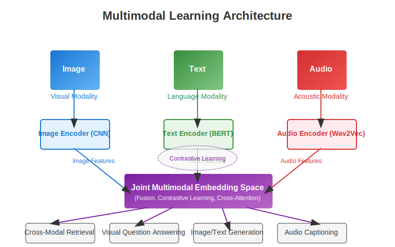
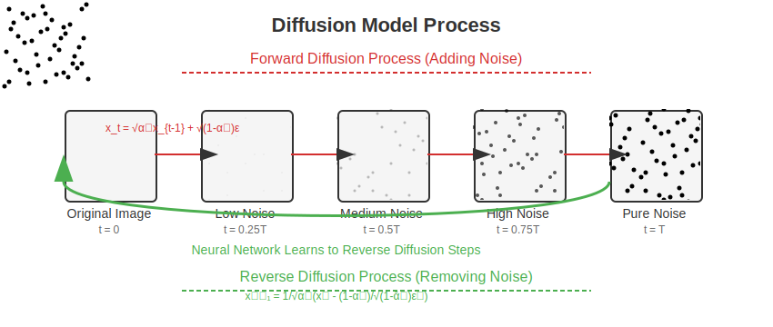
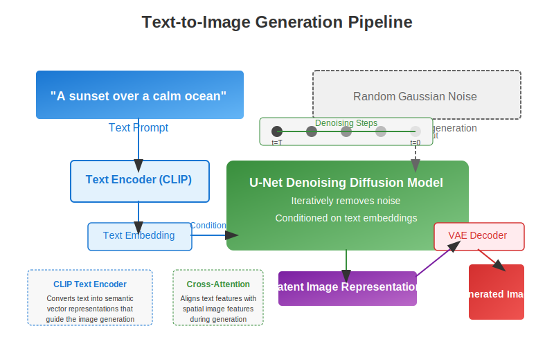
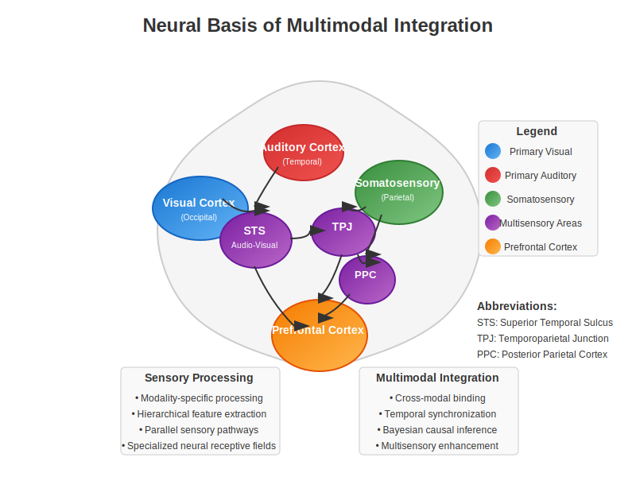

Chapter 13: Multimodal & Diffusion Models#
Learning Objectives
By the end of this chapter, you will be able to:
Understand multimodal learning architectures and their parallels to multisensory integration in the brain
Master diffusion model principles and their mathematical foundations
Connect multimodal integration in AI to multisensory processing in biological systems
Analyze cross-modal representations and fusion techniques
Explain generative modeling approaches for different data modalities
Implement basic generative models with controlled generation capabilities
13.1 Multimodal Learning Foundations#
Multimodal learning involves training models to process and integrate information from multiple modalities (e.g., vision, language, audio). These models demonstrate remarkable capabilities in cross-modal understanding and generation that mirror the brain’s multisensory integration mechanisms.
13.1.1 Cross-modal Representations#
Cross-modal representations allow information to be encoded in a way that captures relationships between different modalities. Consider how a visual concept like “apple” relates to textual descriptions (“round red fruit”), tactile sensations (smooth, firm), and taste (sweet-tart).
import torch
import torch.nn as nn
class MultimodalEncoder(nn.Module):
def __init__(self, visual_dim=2048, text_dim=768, joint_dim=512):
super().__init__()
# Visual encoder projection
self.visual_encoder = nn.Sequential(
nn.Linear(visual_dim, joint_dim*2),
nn.ReLU(),
nn.Linear(joint_dim*2, joint_dim)
)
# Text encoder projection
self.text_encoder = nn.Sequential(
nn.Linear(text_dim, joint_dim*2),
nn.ReLU(),
nn.Linear(joint_dim*2, joint_dim)
)
def forward(self, visual_features, text_features):
# Project both modalities to same dimension
visual_emb = self.visual_encoder(visual_features)
text_emb = self.text_encoder(text_features)
# Normalize embeddings for cosine similarity
visual_emb = visual_emb / visual_emb.norm(dim=-1, keepdim=True)
text_emb = text_emb / text_emb.norm(dim=-1, keepdim=True)
return visual_emb, text_emb
This architecture resembles how the brain’s association areas integrate information from primary sensory regions, creating higher-order representations that combine features across modalities.
13.1.2 Contrastive Learning (CLIP)#
Contrastive Language-Image Pretraining (CLIP) represents a breakthrough in multimodal learning. By training on image-text pairs from the internet, CLIP learns to align visual and linguistic representations.
The contrastive objective maximizes similarity between matching image-text pairs while minimizing similarity between non-matching pairs:
def contrastive_loss(visual_emb, text_emb, temperature=0.07):
"""
Compute contrastive loss between visual and text embeddings
"""
# Compute similarities between all possible image-text pairs
logits = torch.matmul(visual_emb, text_emb.t()) / temperature
# Labels: diagonal elements are the matching pairs (= True pairs)
labels = torch.arange(len(visual_emb), device=visual_emb.device)
# Compute cross entropy loss in both directions
loss_i = nn.CrossEntropyLoss()(logits, labels)
loss_t = nn.CrossEntropyLoss()(logits.t(), labels)
# Average both directions
return (loss_i + loss_t) / 2.0
This resembles how the brain learns cross-modal associations through temporal coincidence - stimuli that frequently co-occur become associated in neural representations.
13.1.3 Joint Embedding Spaces#
Joint embedding spaces map inputs from different modalities into a common representation space where semantic relationships are preserved. In this space, related concepts across modalities (e.g., an image of a dog and the word “dog”) are closer together than unrelated concepts.

This resembles how the brain’s multisensory neurons in regions like the superior temporal sulcus respond to both visual and auditory stimuli related to the same concept.
13.1.4 Alignment and Grounding#
Alignment ensures that representations from different modalities properly correspond to each other, while grounding connects these representations to real-world concepts. Recent models like CLIP demonstrate remarkable zero-shot capabilities by leveraging these principles.
13.2 Diffusion Models#
Diffusion models have revolutionized generative AI by enabling high-quality image synthesis through a process inspired by thermodynamics.
13.2.1 Forward and Reverse Diffusion Processes#
The diffusion process consists of two phases:
Forward diffusion: Gradually adds Gaussian noise to an image until it becomes pure noise
Reverse diffusion: Learns to gradually remove noise to recover the original image

The forward process is defined by:
def forward_diffusion(x_0, t, noise_scheduler):
"""
Apply t steps of forward diffusion to an image x_0
Parameters:
- x_0: Original image
- t: Timestep (amount of noise to add)
- noise_scheduler: Controls noise schedule
Returns:
- Noised image x_t
- Noise added
"""
# Get noise scaling for timestep t
alpha_t = noise_scheduler.alphas[t]
sqrt_alpha_t = torch.sqrt(alpha_t)
sqrt_one_minus_alpha_t = torch.sqrt(1 - alpha_t)
# Sample noise
epsilon = torch.randn_like(x_0)
# Apply noise according to diffusion equation
x_t = sqrt_alpha_t * x_0 + sqrt_one_minus_alpha_t * epsilon
return x_t, epsilon
13.2.2 Denoising Score Matching#
Diffusion models are trained to predict the noise added at each step, enabling the reversal of the diffusion process:
def diffusion_training_loss(model, x_0, noise_scheduler):
"""
Compute loss for training a diffusion model
"""
batch_size = x_0.shape[0]
# Sample random timesteps
t = torch.randint(0, noise_scheduler.num_timesteps, (batch_size,), device=x_0.device)
# Apply forward diffusion to get noisy images
x_t, noise_added = forward_diffusion(x_0, t, noise_scheduler)
# Predict the noise
noise_pred = model(x_t, t)
# Simple MSE loss between actual and predicted noise
return nn.MSELoss()(noise_pred, noise_added)
13.2.3 Sampling Techniques#
To generate new images, we start with random noise and iteratively denoise:
def sample(model, noise_scheduler, shape, device):
"""
Generate a new image by sampling from the diffusion model
"""
# Start from random noise
x_T = torch.randn(shape, device=device)
x_t = x_T
# Iteratively denoise
for t in reversed(range(noise_scheduler.num_timesteps)):
t_tensor = torch.full((shape[0],), t, device=device, dtype=torch.long)
# Predict noise
with torch.no_grad():
predicted_noise = model(x_t, t_tensor)
# Get alpha values for current timestep
alpha_t = noise_scheduler.alphas[t]
alpha_t_prev = noise_scheduler.alphas[t-1] if t > 0 else torch.tensor(1.0)
# Apply formula for reverse process step
# (Simplified version of the full algorithm)
coef1 = torch.sqrt(1 / alpha_t)
coef2 = (1 - alpha_t) / torch.sqrt(1 - alpha_t)
x_t = coef1 * (x_t - coef2 * predicted_noise)
# Add noise for t > 0
if t > 0:
sigma_t = torch.sqrt(
(1 - alpha_t_prev) / (1 - alpha_t) * (1 - alpha_t / alpha_t_prev)
)
x_t += sigma_t * torch.randn_like(x_t)
return x_t
13.2.4 Model Architectures (U-Nets)#
Diffusion models typically use U-Net architectures with time conditioning:
class SimpleUNet(nn.Module):
def __init__(self, channels=3, time_emb_dim=256):
super().__init__()
# Time embedding
self.time_embed = nn.Sequential(
nn.Linear(1, time_emb_dim),
nn.SiLU(),
nn.Linear(time_emb_dim, time_emb_dim),
)
# Simplified U-Net structure
self.down1 = nn.Conv2d(channels, 64, 3, padding=1)
self.down2 = nn.Conv2d(64, 128, 3, padding=1, stride=2)
self.down3 = nn.Conv2d(128, 256, 3, padding=1, stride=2)
# Middle blocks with time conditioning
self.mid_conv1 = nn.Conv2d(256, 256, 3, padding=1)
self.mid_time = nn.Linear(time_emb_dim, 256)
self.mid_conv2 = nn.Conv2d(256, 256, 3, padding=1)
# Upsampling path
self.up1 = nn.ConvTranspose2d(256, 128, 4, stride=2, padding=1)
self.up2 = nn.ConvTranspose2d(128, 64, 4, stride=2, padding=1)
self.up3 = nn.Conv2d(64, channels, 3, padding=1)
def forward(self, x, t):
# Embed time
t_emb = self.time_embed(t.unsqueeze(-1).float())
# Downsample
x1 = nn.functional.silu(self.down1(x))
x2 = nn.functional.silu(self.down2(x1))
x3 = nn.functional.silu(self.down3(x2))
# Middle with time conditioning
h = nn.functional.silu(self.mid_conv1(x3))
h = h + self.mid_time(t_emb)[:, :, None, None]
h = nn.functional.silu(self.mid_conv2(h))
# Upsample
h = nn.functional.silu(self.up1(h))
h = nn.functional.silu(self.up2(h))
h = self.up3(h)
return h
13.3 Text-to-Image Models#
Text-to-image models combine diffusion models with text conditioning to generate images from text descriptions.
13.3.1 Leading Models: DALL-E, Stable Diffusion, Midjourney#
Several breakthrough models have demonstrated impressive text-to-image capabilities:
DALL-E 2/3: OpenAI’s models use diffusion and CLIP-like conditioning
Stable Diffusion: Latent diffusion model that operates in a compressed latent space
Midjourney: Proprietary architecture with remarkable aesthetic quality
13.3.2 Conditioning Mechanisms#
Text-to-image models incorporate text information through conditioning mechanisms:

def classifier_free_guidance(model, x_t, t, text_emb, guidance_scale=7.5):
"""
Apply classifier-free guidance for controlled generation
"""
# Get unconditional prediction (empty text embedding)
null_text_emb = torch.zeros_like(text_emb)
noise_pred_uncond = model(x_t, t, null_text_emb)
# Get conditional prediction (with text embedding)
noise_pred_text = model(x_t, t, text_emb)
# Apply guidance
noise_pred = noise_pred_uncond + guidance_scale * (noise_pred_text - noise_pred_uncond)
return noise_pred
13.3.3 Latent Spaces#
Stable Diffusion operates in a compressed latent space rather than pixel space, reducing computational requirements while maintaining generation quality:
class LatentDiffusionModel:
def __init__(self):
self.vae_encoder = VAEEncoder()
self.vae_decoder = VAEDecoder()
self.diffusion_model = UNetWithTextCondition()
self.text_encoder = TextEncoder()
def encode_image(self, image):
return self.vae_encoder(image)
def decode_latents(self, latents):
return self.vae_decoder(latents)
def encode_text(self, text):
return self.text_encoder(text)
def generate(self, text, steps=50):
# Encode text prompt
text_embedding = self.encode_text(text)
# Start from random latent
latent = torch.randn(1, 4, 64, 64)
# Reverse diffusion process
for t in reversed(range(steps)):
# Denoise one step with text conditioning
latent = self.diffusion_step(latent, t, text_embedding)
# Decode latent to image
image = self.decode_latents(latent)
return image
13.3.4 Text Encoders and Cross-Attention#
Text-to-image models use transformers to encode text and cross-attention to incorporate text information into the diffusion process:
class CrossAttentionBlock(nn.Module):
def __init__(self, channels, text_dim=768):
super().__init__()
self.norm = nn.GroupNorm(32, channels)
self.q = nn.Linear(channels, channels)
self.k = nn.Linear(text_dim, channels)
self.v = nn.Linear(text_dim, channels)
self.proj_out = nn.Linear(channels, channels)
self.scale = channels ** -0.5
def forward(self, x, text_features):
"""
x: [B, C, H, W] - image features
text_features: [B, L, D] - text features
"""
batch, c, h, w = x.shape
residual = x
# Normalize input
x = self.norm(x)
# Reshape for attention
x = x.reshape(batch, c, -1).transpose(1, 2) # [B, H*W, C]
# Compute attention
q = self.q(x) * self.scale
k = self.k(text_features)
v = self.v(text_features)
# Attention weights
attn = torch.bmm(q, k.transpose(1, 2)) # [B, H*W, L]
attn = torch.softmax(attn, dim=-1)
# Apply attention
out = torch.bmm(attn, v) # [B, H*W, C]
out = self.proj_out(out)
# Reshape back and add residual
out = out.transpose(1, 2).reshape(batch, c, h, w)
return out + residual
13.4 Video and Audio Generation#
Diffusion models have been extended to generate video and audio by handling temporal dimensions.
13.4.1 Temporal Extensions of Diffusion Models#
Video diffusion models add time as an additional dimension:
class VideoUNet(nn.Module):
def __init__(self, channels=3, frames=16):
super().__init__()
# Spatio-temporal convolutions
self.conv3d_1 = nn.Conv3d(channels, 64, kernel_size=(3, 3, 3), padding=(1, 1, 1))
self.conv3d_2 = nn.Conv3d(64, 128, kernel_size=(3, 3, 3), padding=(1, 1, 1))
# Additional layers...
def forward(self, x, t, text_emb):
# x: [B, C, F, H, W] - batch, channels, frames, height, width
# Process video with temporal context
# ...
13.4.2 Audio Generation Approaches#
Audio generation models leverage similar principles but with adaptations for 1D sequences:
class AudioDiffusion(nn.Module):
def __init__(self, channels=1, sample_rate=16000):
super().__init__()
# 1D convolutions for audio
self.conv1d_1 = nn.Conv1d(channels, 64, kernel_size=3, padding=1)
self.conv1d_2 = nn.Conv1d(64, 128, kernel_size=3, padding=1)
# Additional layers...
13.4.3 Consistency Techniques#
Generating coherent video requires consistency across frames, often addressed through specialized architectures and loss functions:
def consistency_loss(frames_pred, frames_gt):
"""
Compute both per-frame loss and temporal consistency loss
"""
# Per-frame reconstruction loss
frame_loss = nn.MSELoss()(frames_pred, frames_gt)
# Temporal consistency: compare frame differences
frame_diffs_pred = frames_pred[:, :, 1:] - frames_pred[:, :, :-1]
frame_diffs_gt = frames_gt[:, :, 1:] - frames_gt[:, :, :-1]
temporal_loss = nn.MSELoss()(frame_diffs_pred, frame_diffs_gt)
return frame_loss + 0.5 * temporal_loss
13.5 Neural Multimodal Integration#
The brain’s multisensory integration systems provide inspiration for artificial multimodal models.
13.5.1 Multisensory Areas in the Brain#
Several brain regions integrate information across sensory modalities:
Superior Temporal Sulcus (STS): Integrates visual and auditory information
Posterior Parietal Cortex: Combines visual, proprioceptive, and tactile information
Prefrontal Cortex: Higher-level integration of multiple modalities

13.5.2 Cross-modal Binding and Attention#
The brain uses several mechanisms to bind information across modalities:
def simulate_cross_modal_binding(visual_input, auditory_input, semantic_congruence=1.0):
"""
Simulate cross-modal binding with the McGurk effect
Parameters:
- visual_input: Visual speech cue (e.g., lip movements for "ga")
- auditory_input: Auditory speech cue (e.g., sound "ba")
- semantic_congruence: How congruent the stimuli are (0-1)
Returns:
- Perceived output after cross-modal integration
"""
# Simple model of superior temporal sulcus integration
visual_weight = 0.4 # Visual influence
auditory_weight = 0.6 # Auditory influence
# Modulate influence by congruence
if semantic_congruence < 0.5:
# Less binding when stimuli don't match
visual_weight *= semantic_congruence
auditory_weight = 1 - visual_weight
# Weighted integration (simplified)
perceived_output = (
visual_weight * visual_input +
auditory_weight * auditory_input
)
# For McGurk effect, return illusory perception
if 0.3 < semantic_congruence < 0.7:
# Create illusory perception (e.g., "da" from visual "ga" + auditory "ba")
perceived_output = "da" # Simplified illustration
return perceived_output
13.5.3 Hierarchical Sensory Processing#
The brain processes sensory information hierarchically, with increasing complexity and multimodal integration at higher levels:
def hierarchical_sensory_model():
model = nn.Sequential(
# Primary visual cortex (V1) - simple features
nn.Conv2d(3, 64, kernel_size=3, padding=1),
nn.ReLU(),
# V2/V4 - more complex features
nn.Conv2d(64, 128, kernel_size=3, padding=1),
nn.ReLU(),
nn.MaxPool2d(2),
# Inferotemporal cortex - object recognition
nn.Conv2d(128, 256, kernel_size=3, padding=1),
nn.ReLU(),
nn.MaxPool2d(2),
# Flattening for higher levels
nn.Flatten(),
# Higher association areas - multimodal integration
nn.Linear(256 * 8 * 8, 512),
nn.ReLU(),
# Decision outputs
nn.Linear(512, 10)
)
return model
13.5.4 Crossmodal Illusions and Phenomena#
Studying crossmodal illusions provides insights into how the brain integrates information:
McGurk Effect: Visual lip movements change auditory perception
Ventriloquist Effect: Sound source is perceived as coming from a moving visual target
Double Flash Illusion: A single flash with two beeps is perceived as two flashes
13.6 Code Lab: Simple Diffusion Model#
Let’s implement a simplified diffusion model for image generation:
import torch
import torch.nn as nn
import torch.nn.functional as F
import numpy as np
from tqdm import tqdm
import matplotlib.pyplot as plt
class DiffusionScheduler:
def __init__(self, num_timesteps=1000, beta_start=0.0001, beta_end=0.02):
"""
Diffusion scheduler that manages the noise schedule
"""
self.num_timesteps = num_timesteps
# Linear schedule of variance over time
self.betas = torch.linspace(beta_start, beta_end, num_timesteps)
# Calculate alphas for convenience
self.alphas = 1 - self.betas
self.alphas_cumprod = torch.cumprod(self.alphas, dim=0)
self.alphas_cumprod_prev = F.pad(self.alphas_cumprod[:-1], (1, 0), value=1.0)
# Calculate other required values
self.sqrt_alphas_cumprod = torch.sqrt(self.alphas_cumprod)
self.sqrt_one_minus_alphas_cumprod = torch.sqrt(1. - self.alphas_cumprod)
self.sqrt_recip_alphas = torch.sqrt(1.0 / self.alphas)
self.posterior_variance = self.betas * (1. - self.alphas_cumprod_prev) / (1. - self.alphas_cumprod)
class SimpleUNet(nn.Module):
def __init__(self, image_channels=1, hidden_channels=64):
super().__init__()
# Time embedding
self.time_mlp = nn.Sequential(
nn.Linear(1, hidden_channels),
nn.SiLU(),
nn.Linear(hidden_channels, hidden_channels),
)
# Initial convolution
self.conv_in = nn.Conv2d(image_channels, hidden_channels, kernel_size=3, padding=1)
# Downsampling
self.down1 = nn.Conv2d(hidden_channels, hidden_channels, kernel_size=3, padding=1, stride=2)
self.down2 = nn.Conv2d(hidden_channels, hidden_channels*2, kernel_size=3, padding=1, stride=2)
# Middle
self.middle1 = nn.Conv2d(hidden_channels*2, hidden_channels*2, kernel_size=3, padding=1)
self.middle2 = nn.Conv2d(hidden_channels*2, hidden_channels*2, kernel_size=3, padding=1)
# Upsampling
self.up1 = nn.ConvTranspose2d(hidden_channels*2, hidden_channels, kernel_size=4, stride=2, padding=1)
self.up2 = nn.ConvTranspose2d(hidden_channels*2, hidden_channels, kernel_size=4, stride=2, padding=1)
# Final layers
self.conv_out = nn.Conv2d(hidden_channels*2, image_channels, kernel_size=3, padding=1)
def forward(self, x, t):
"""
x: (B, C, H, W) input image
t: (B,) diffusion timesteps
"""
# Encode time
t_emb = self.time_mlp(t.unsqueeze(-1).float()) # (B, hidden_channels)
# Initial processing
h = self.conv_in(x)
h1 = F.silu(h)
# Downsample
h2 = F.silu(self.down1(h1))
h3 = F.silu(self.down2(h2))
# Middle with time conditioning
h3 = h3 + t_emb.unsqueeze(-1).unsqueeze(-1)
h3 = F.silu(self.middle1(h3))
h3 = F.silu(self.middle2(h3))
# Upsample with skip connections
h = F.silu(self.up1(h3))
h = torch.cat([h, h2], dim=1) # Skip connection
h = F.silu(self.up2(h))
h = torch.cat([h, h1], dim=1) # Skip connection
# Output
return self.conv_out(h)
def train_diffusion_model(model, dataloader, scheduler, epochs=10, lr=1e-4, device="cpu"):
"""
Train a diffusion model
"""
optimizer = torch.optim.Adam(model.parameters(), lr=lr)
for epoch in range(epochs):
total_loss = 0
for x in tqdm(dataloader):
x = x.to(device)
batch_size = x.shape[0]
# Random timesteps
t = torch.randint(0, scheduler.num_timesteps, (batch_size,), device=device)
# Add noise according to timesteps
noise = torch.randn_like(x)
x_noisy = (
scheduler.sqrt_alphas_cumprod[t, None, None, None] * x +
scheduler.sqrt_one_minus_alphas_cumprod[t, None, None, None] * noise
)
# Predict noise
noise_pred = model(x_noisy, t)
# Loss (predict the noise that was added)
loss = F.mse_loss(noise_pred, noise)
optimizer.zero_grad()
loss.backward()
optimizer.step()
total_loss += loss.item()
print(f"Epoch {epoch+1}, Loss: {total_loss/len(dataloader):.6f}")
return model
def sample_from_model(model, scheduler, shape, device="cpu", steps=None):
"""
Sample a new image from the trained diffusion model
"""
# Start from pure noise
img = torch.randn(shape, device=device)
steps = steps or scheduler.num_timesteps
step_size = scheduler.num_timesteps // steps
# Progressively denoise
for i in tqdm(reversed(range(0, scheduler.num_timesteps, step_size))):
t = torch.full((shape[0],), i, device=device, dtype=torch.long)
# Get model prediction (noise)
with torch.no_grad():
predicted_noise = model(img, t)
# Get alpha values for timestep
alpha = scheduler.alphas[i]
alpha_hat = scheduler.alphas_cumprod[i]
beta = scheduler.betas[i]
# If not the last step, add noise
if i > 0:
noise = torch.randn_like(img)
next_i = max(i - step_size, 0)
alpha_next = scheduler.alphas_cumprod[next_i]
variance = scheduler.posterior_variance[i]
img = (img - beta * predicted_noise / torch.sqrt(1 - alpha_hat)) / torch.sqrt(alpha)
img = img + torch.sqrt(variance) * noise
else:
# Last step - clean prediction
img = (img - beta * predicted_noise / torch.sqrt(1 - alpha_hat)) / torch.sqrt(alpha)
# Clamp to valid image range
img = torch.clamp(img, -1, 1)
return (img + 1) / 2 # Scale to [0, 1]
# Example usage:
# scheduler = DiffusionScheduler()
# model = SimpleUNet().to(device)
# train_diffusion_model(model, mnist_dataloader, scheduler, device=device)
# sample = sample_from_model(model, scheduler, (1, 1, 28, 28), device=device)
13.7 Take-aways#
Multimodal models capture cross-domain relationships in ways that mirror the brain’s multisensory integration capabilities. Both artificial and biological systems benefit from combining information across modalities.
Diffusion models provide high-quality generation through a principled approach based on gradually adding and removing noise. This approach yields remarkable flexibility in generation tasks.
Combining modalities enhances representation quality by leveraging complementary information across domains, similar to how the brain integrates vision, hearing, and touch to create a unified perception of reality.
Cross-modal binding mechanisms in both artificial and biological systems enable the creation of coherent representations that span multiple sensory domains.
Chapter Summary
In this chapter, we explored:
Multimodal learning foundations that enable models to work across different data types
Cross-modal representations that create shared embedding spaces between modalities
Contrastive learning approaches like CLIP that align visual and textual information
Diffusion models with their forward and reverse processes for high-quality generation
Denoising score matching as the mathematical foundation of diffusion models
Sampling techniques that control the generation process in diffusion models
Text-to-image models like DALL-E, Stable Diffusion, and Midjourney
Video and audio generation through temporal extensions of diffusion approaches
Neural multimodal integration in the brain’s multisensory processing areas
Implementation details of a simple diffusion model for image generation
This chapter connects cutting-edge AI generative methods with the brain’s multimodal processing systems, highlighting how both artificial and biological intelligence benefit from integrating information across sensory domains.
13.8 Further Reading & Media#
Radford, A., et al. (2021). Learning Transferable Visual Models From Natural Language Supervision. This paper introduces CLIP, a groundbreaking approach to multimodal learning.
Ho, J., et al. (2020). Denoising Diffusion Probabilistic Models. The seminal paper that introduced the modern formulation of diffusion models.
Rombach, R., et al. (2022). High-Resolution Image Synthesis with Latent Diffusion Models. Introduces Stable Diffusion and the concept of latent diffusion.
Nichol, A., et al. (2021). GLIDE: Towards Photorealistic Image Generation and Editing with Text-Guided Diffusion Models. Early work on text-guided diffusion models.
Ramesh, A., et al. (2022). Hierarchical Text-Conditional Image Generation with CLIP Latents. The DALL-E 2 paper describing a powerful text-to-image system.
Stein, S., et al. (2023). Phenomenal Multimodal Integration in Superior Temporal Sulcus. A neuroscience perspective on multimodal integration.